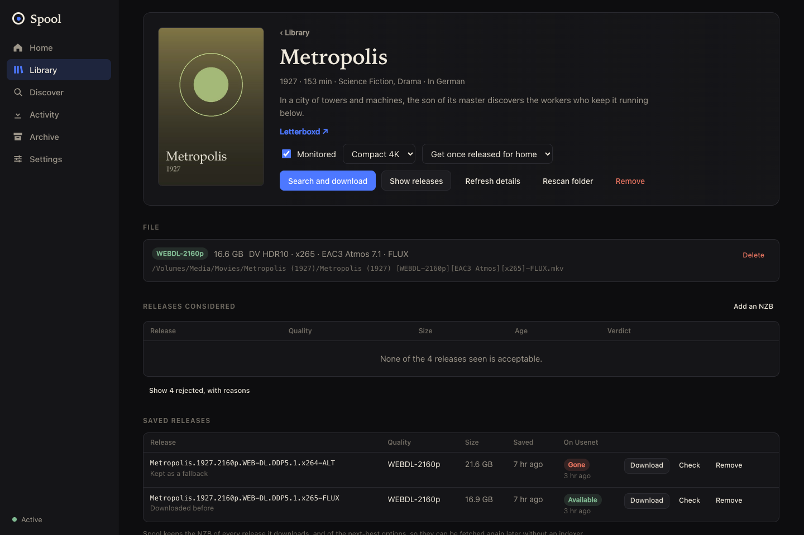

One service for your movie and TV library.
Spool finds, downloads, verifies, files and plays movies and television, on every machine that holds part of the library. One process, one queue and one web app where there used to be three.

Why
Three programs passing notes, replaced by one that knows the whole story.
The usual setup has one app for movies, another for series and a third to download, each with its own queue, settings and idea of what went wrong. Spool keeps one record from "I want this" to "it is in the library".
One catalog for movies and series, one downloader built in, one place that can say why a release was chosen, what failed and what it is doing about it. It can serve the television too, or keep working beside the Plex you already have.
What it does
From "I want this" to playing on the television.
Four things, each of which used to be a program of its own, or a job nobody had.
Finds and downloads
Every release it sees gets a verdict and a reason. What it takes is checked before it is fetched, unpacked as it arrives, and remembered so that it can be had again.
Looks after the library
It takes your folders as it finds them, in as many places as they are. It keeps a story together, subtitles in time, and the disk from filling.
Plays what it files
Infuse and other players open the library as Spool knows it, at home and away. A film comes from the machine that holds it, with a small version for a slow line.
Works across machines
A NAS does its own downloading, filing and playing. It is found on the network and linked with a short code, and no folder is typed twice.
For assistants
Ask an AI why something hasn't arrived.
Spool speaks the Model Context Protocol, so an assistant such as Claude can look at your library and operate it.
- One call to diagnose a missing title: monitoring, rejections by reason, failed downloads and log lines together.
- Add, search, download, manage the queue, the archive and Plex.
- Always behind a key, with a read-only key if you want one. Deleting files needs explicit confirmation.

Get started
Build it and point it at your library.
Spool runs on macOS and Linux, natively or in a container, which is also how it goes on TrueNAS and other NAS systems.
# with Docker git clone https://github.com/rewtraw/spool && cd spool mkdir -p data && $EDITOR compose.yaml # set the user and your media path docker compose up -d --build # http://localhost:7979 # or from source: Rust, Bun, and par2, 7zz and ffmpeg on the PATH (cd web && bun install && bun run build) cargo run --release -p spool -- serve
Add your folders, a Usenet provider and a Newznab indexer in Settings. Spool starts in shadow mode, recording what it would do and changing nothing, until you switch it to active. Coming from Radarr, Sonarr and SABnzbd? spool migrate brings over your catalog, profiles, indexers and servers. Getting started has every step.
Guides
How to set it up, and what it does with your files.
Getting started
Installing, the first settings, shadow mode, coming from Radarr and Sonarr, and running it as a service.
Your library
Bringing in what you have, what Spool changes on disk, what it never touches, and how to get something back.
More than one place
Another disk or a share from a NAS, managed or only read, and what happens while it is switched off.
On a television
Serving the library to Infuse and other players that speak to Jellyfin, at home and away.
Collections and anime
Series of films, and an anime's series, films and side stories, grouped by themselves in the library, on players and in Plex.
Files it recognises
Every name it knows for trailers, extras, artwork, notes and theme music in a title's folder.
Also: compact versions, a helper on the NAS, beside Plex, AI assistants, the HTTP API, how Spool is put together and the full list.